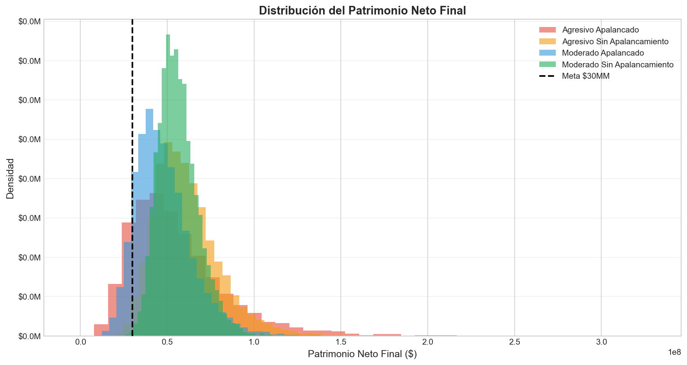
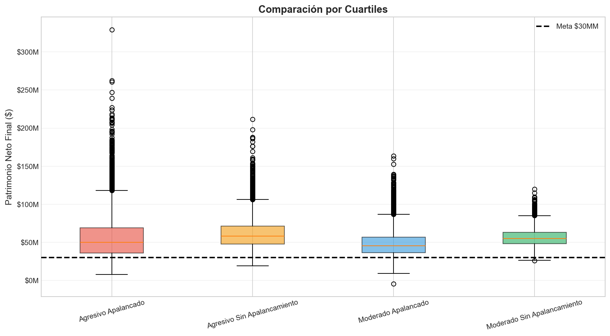
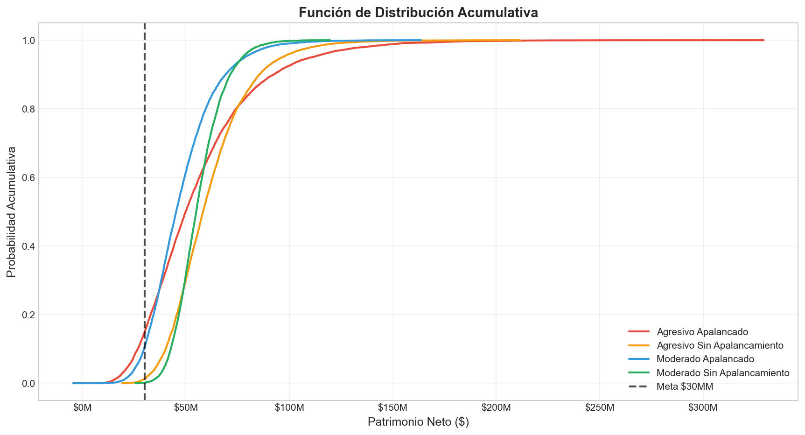
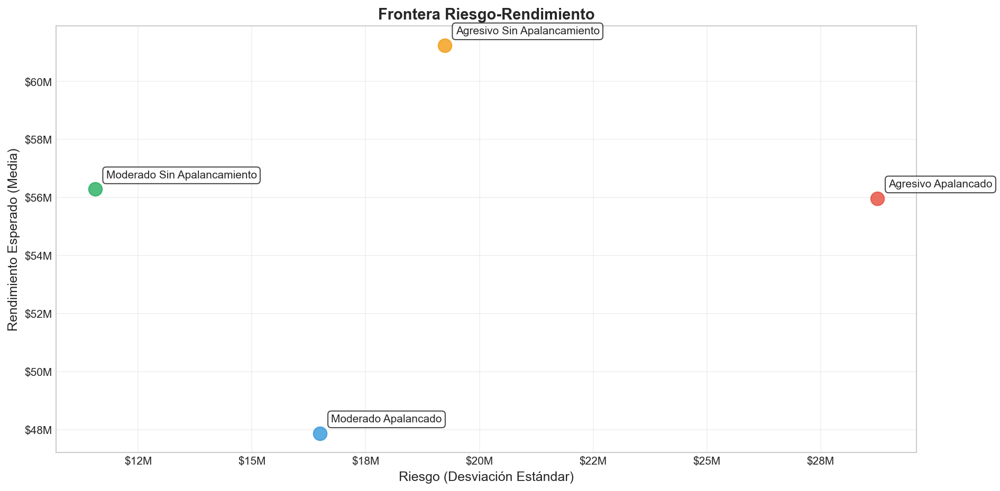

Este gráfico muestra la distribución de frecuencias del patrimonio neto final (mes 60) para cada una de las cuatro estrategias simuladas. Cada estrategia fue ejecutada 10,000 veces, cada vez con condiciones de mercado ligeramente diferentes. El histograma revela tanto el rango de resultados posibles como la probabilidad de cada resultado.

El apalancamiento agresivo muestra una distribución más amplia, reflejando mayor volatilidad. Sin embargo, su media es superior. Las estrategias sin apalancamiento muestran distribuciones más concentradas alrededor de valores específicos, indicando menor riesgo pero también menor potencial de crecimiento.
El box plot compara los cuartiles de cada estrategia. La caja representa el rango intercuartil (25% al 75% de los casos), la línea dentro de la caja es la mediana, y los bigotes representan los casos extremos (5% y 95%).

Las estrategias apalancadas tienen cajas más anchas, indicando mayor dispersión. El apalancamiento agresivo tiene la mediana más alta, pero también la mayor volatilidad. La meta de $30 millones es alcanzada por más del 60% de los escenarios en las estrategias apalancadas.
La CDF muestra la probabilidad acumulada de alcanzar o superar un patrimonio neto específico. Una curva más inclinada a la derecha indica mayor concentración en valores altos.

La CDF visual iza claramente cómo el apalancamiento desplaza las probabilidades hacia valores más altos, pero con mayor riesgo de pérdidas. La línea vertical en $30M muestra que el apalancamiento agresivo alcanza la meta en ~65% de los casos, mientras que el moderado sin apalancamiento en ~58%.
Este gráfico de dispersión coloca cada estrategia en un plano donde el eje X es el riesgo (desviación estándar del patrimonio final) y el eje Y es el rendimiento esperado (media del patrimonio final).

Las estrategias apalancadas se posicionan hacia la derecha (más riesgo) y hacia arriba (más retorno). La frontera de eficiencia sugiere que no existe una estrategia dominante: cada inversor debe elegir según su tolerancia al riesgo y su horizonte temporal.